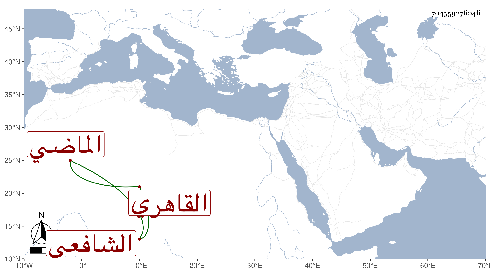

0902Sakhawi.DawLamic.ITO20230111-ara1.EIS1600.704559276046
Biography ID: 704559276046
421
أبو الفوز هو محمد بن خالد بن محمد القاهري الشافعي الماضي أبوه وجده ويعرف كأبيه بابن زين الدين ولد ونشأ فتولع بالاشتغال وحضر عند الفخر المقسي والجوجري وغيرهما في الفقه وغيره وعند خالد في النحو ولازمني مديدة ثم انفصل مع تكرر تردده وله حافظة يحفظ بها فروعا ومتونا ونحو ذلك وربما خبط وأما فاهمته فضعيفة جدا والغالب عليه التعتعة والخفة وقد تكسب بالشهادة وتنزل في سعيد السعداء وغيرها وخطب في جامعهم بل استقر به تغرى بردى القادري في خطابة جامع المغاربة وصاهر ابن بيانة المعامل على ابنته واستولدها ثم فارقها وكثر تردده لناظر الخاص ابن الصابوني وتوصل به في استقراره أحد جماعة الخشابية ولا زال حتى أدرجه الزبني زكريا في النواب المجددين وجلس بحانوت قناطر السباع .
